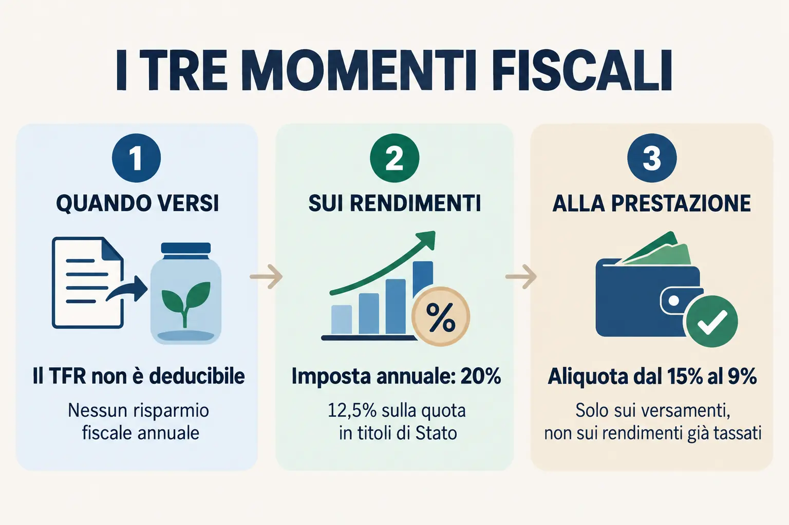

Fai due conti · Previdenza
Versare il TFR annuale nel fondo pensione, senza confusione.
Un esempio semplice per vedere quanto viene versato, come vengono tassati i rendimenti e su quale parte si applicano le imposte quando si arriva alla pensione.

Il risultato
Da 48 a 68 anni: 20 anni di versamenti.
TFR in Azienda o INPS vs. Fondo Pensione
| Destinazione del TFR | Modalità di liquidazione alla pensione |
|---|---|
| Azienda / INPS | 100% in capitale (tutto subito, senza alcun limite). |
| Fondo Pensione | Massimo 50% in capitale e il restante in rendita. Puoi prendere il 100% in capitale solo se la rendita vitalizia derivante dalla conversione di almeno il 70% del montante finale è inferiore al 50% dell’assegno sociale. |
Anno per anno
Importi arrotondati all’euro
| Anno | Età | TFR versato | Rendimento lordo | Tasse rendimenti | Valore fondo |
|---|
Come funziona il calcolo
- La quota annua è stimata, in modo semplificato, dividendo la RAL per 13,5.
- Il TFR viene simulato con accrediti mensili; il rendimento e la relativa imposta sono calcolati mese per mese.
- Non sono previsti versamenti volontari né contributi aggiuntivi del datore di lavoro: per questo il beneficio fiscale annuale è pari a zero.
- L’aliquota finale parte dal 15% e si riduce dello 0,30% per ogni anno di partecipazione successivo al quindicesimo, fino al minimo del 9%.
- Si presume che l’adesione al fondo inizi oggi e prosegua senza interruzioni fino alla pensione.
- La soglia per ottenere il 100% in capitale è selezionata dalla tabella allegata in base all’età intera al pensionamento e al sesso indicato.
Avvertenze importanti
Questa è una simulazione didattica, non una previsione né una proposta di investimento. Il rendimento è costante e puramente ipotetico; non considera costi del fondo, garanzie, andamento reale dei mercati, inflazione, variazioni della RAL, anticipazioni, riscatti, trasferimenti o regimi fiscali riferiti a montanti anteriori al 2007.
La formula RAL ÷ 13,5 rappresenta la quota lorda civilistica. La quota effettivamente destinata al fondo può risultare inferiore, anche per il contributo aggiuntivo dello 0,50% e per le regole applicabili alla retribuzione utile. Per un calcolo personale vanno verificati busta paga, CCNL e documentazione del fondo.
L’imposta sui rendimenti è impostata al 20% per rendere evidente il meccanismo. Nella realtà la quota riferibile a titoli di Stato e assimilati beneficia del 12,5% e, dal 1° luglio 2026, la disciplina può riconoscere ulteriori riduzioni legate agli anni di permanenza. La tassazione effettiva dipende dalla normativa vigente e dalla situazione individuale.
Le soglie sono indicative, riferite alle età intere da 57 a 70 anni e possono essere aggiornate nel tempo. Età in anni e mesi, data della domanda, coefficienti di conversione, tipologia e frequenza della rendita possono modificare il risultato effettivo. La verifica definitiva spetta al fondo pensione. Restano inoltre ferme le eccezioni previste per i cosiddetti “vecchi iscritti”.